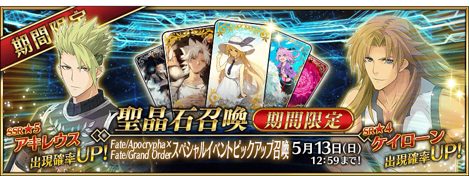
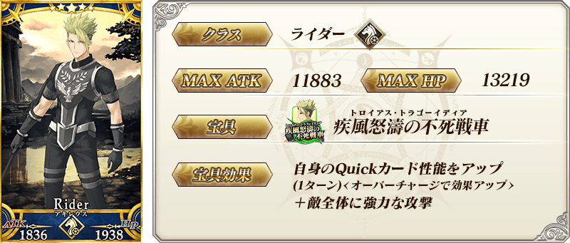
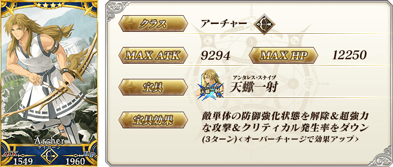
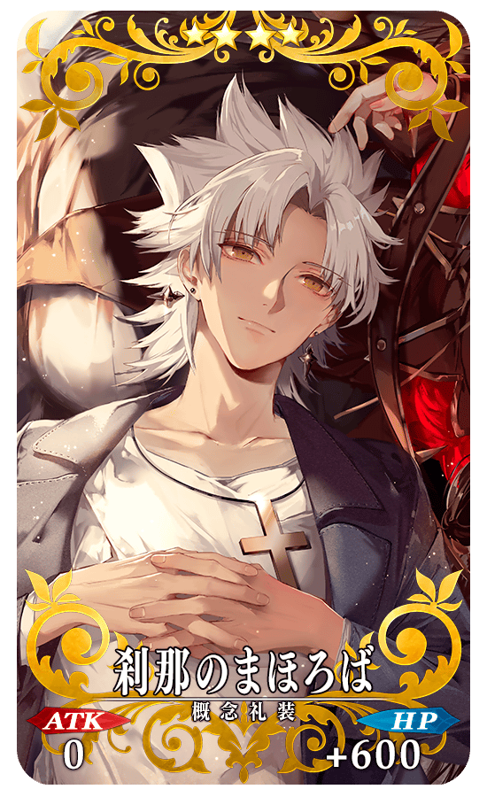
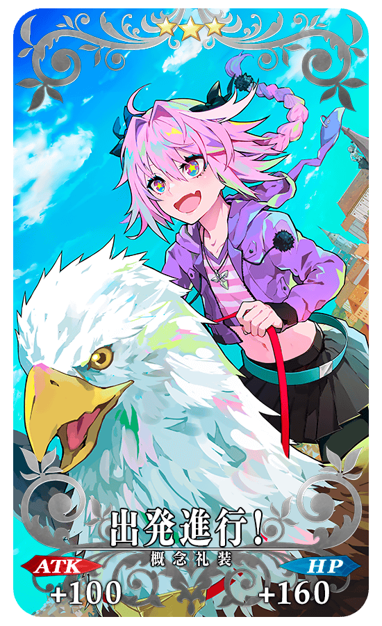
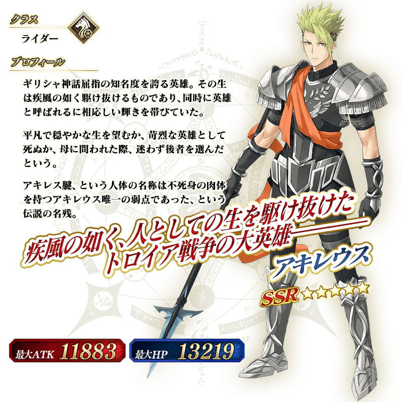
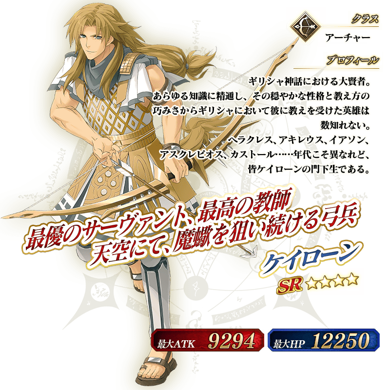

◆「Fate/Apocrypha×Fate/Grand Order特別活動Pick Up召喚」期間◆
期間:2018年4月29日(日) 19:00～5月13日(日) 11:59
為了記念期間限定Fate/Apocrypha×Fate/Grand Order特別活動「Apocrypha/Inheritance of Glory」的開幕記念，舉辦期間限定「Fate/Apocrypha×Fate/Grand Order特別活動Pick Up召喚」！
在「Fate/Apocrypha」活躍的Servant「★5(SSR)阿基里斯」與「★4(SR)凱隆」新登場。
上述2位的ServantPick Up！
※阿基里斯、凱隆在Pick Up期間結束後追加至故事召喚。
詳情請在聖晶石召喚畫面左下的召喚詳細確認。
裝備期間限定概念禮裝「★5(SSR)彼方への巡礼」「★4(SR)刹那のまほろば」「★3(R)出発進行！」的話，在期間限定Fate/Apocrypha×Fate/Grand Order特別活動「Apocrypha/Inheritance of Glory」中會提升活動専用道具的掉落獲得數。
※「★3(R)出発進行！」在Pick Up期間中，也能在友情點數召喚獲得。
※請注意自友情點數召喚抽出「★3(R)出発進行！」在自動變還設定登錄★3(R)概念禮裝的情況，會變成自動變還的對象。
Pick Up期間中，新登場Servant、期間限定概念禮裝的出現機率提升！
10次召喚中確定1張★4(SR)以上和確定1位★3(R)以上的Servant！
※確定★4(SR)以上包含Servant和概念禮裝。


 |
★★★★★SSR |
|  |
★★★★SR |
|  |
★★★R |




介紹阿基里斯、凱隆的寶具演出！
在「Fate/Grand Order」官方網站內的公告中，公開了「★5(SSR)阿基里斯」「★4(SR)凱隆」的寶具演出。敬請確認。
可入手活動限定Servant「★4(SR)齊格」的期間限定Fate/Apocrypha×Fate/Grand Order特別活動「Apocrypha/Inheritance of Glory」的詳情請至下述橫幅確認。